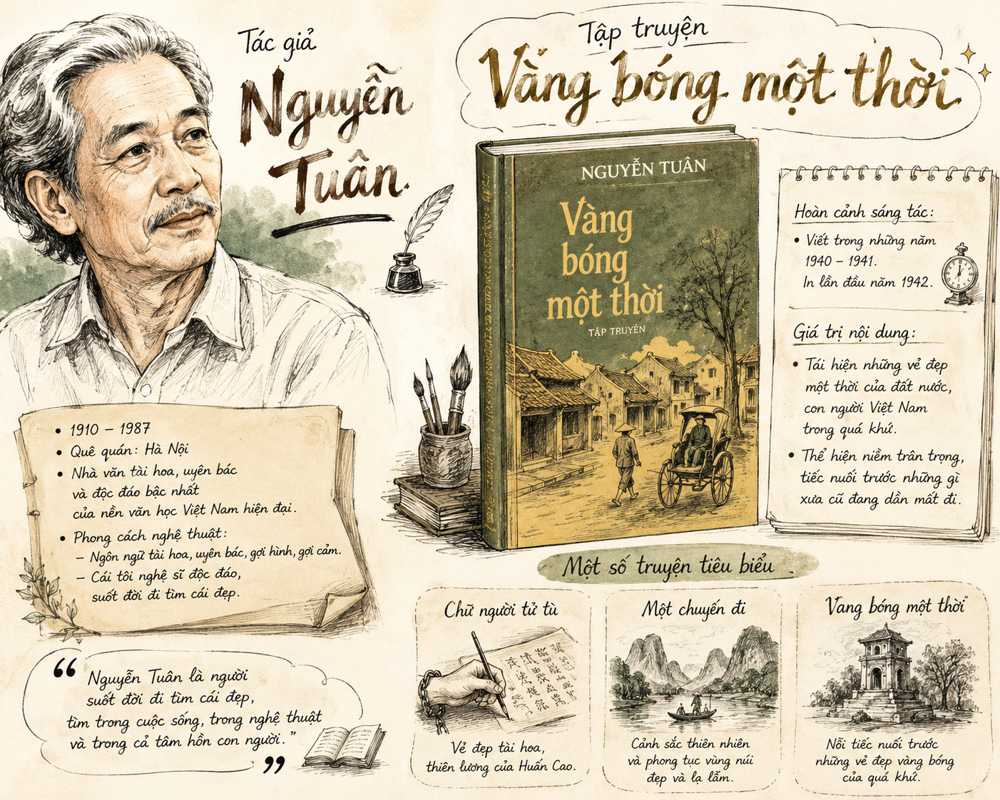
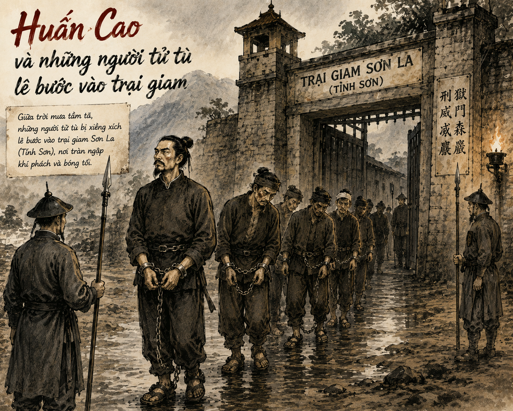

Lời dẫn bài học:
"Dựa vào nhan đề Chữ người tử tù, bạn thử suy đoán xem tác phẩm viết về câu chuyện gì?"
I TÁC GIẢ VÀ TÁC PHẨM
1 Tác giả Nguyễn Tuân
• Năm sinh - mất: 1910 – 1987, quê ở làng Nhân Mục (nay thuộc quận Thanh Xuân, Hà Nội).
• Vị trí: Là nhà văn lớn, nghệ sĩ tài hoa, độc đáo của nền văn học Việt Nam hiện đại.
• Phong cách sáng tác: Độc đáo, tài hoa, uyên bác; luôn khám phá con người ở phương diện tài hoa nghệ sĩ và tiếp cận cảnh vật ở góc độ văn hóa, thẩm mỹ.
• Tác phẩm chính: Vàng bóng một thời (1940), Thiếu quê hương (1940), Sông Đà (1960), Hà Nội ta đánh Mỹ giỏi (1972)...
2 Tác phẩm "Chữ người tử tù"
• Xuất xứ: Ban đầu có tên là "Dòng chữ cuối cùng" (in trên tạp chí Tảo Đàn số 1, 1939), sau đó đổi thành "Chữ người tử tù" và in trong tập truyện ngắn Vàng bóng một thời (1940).
• Bối cảnh/Đề tài: Khôi phục lại không gian văn hóa truyền thống, hình ảnh những con người tài hoa, nghĩa khí còn sót lại của một thời quá đứt.
• Thể loại: Truyện ngắn hiện đại.
[Hình minh họa 1: Tác giả Nguyễn Tuân & Tập truyện Vàng bóng một thời]

II ĐỌC HIỂU CHI TIẾT TÁC PHẨM
1 Cuộc trò chuyện giữa viên quản ngục và thầy thơ lại
• Viên quản ngục nhận phiếu trát tiếp nhận 6 tên tù nguy hiểm, đứng đầu là Huấn Cao - người nổi tiếng với tài "viết chữ rất nhanh và rất đẹp", lại có tài bẻ khóa vượt ngục.
• Thái độ của quản ngục: Trái ngược với suy đoán thông thường, ngục quan tỏ ra trân trọng, tiếc nuối cho một tài năng sa cơ, dặn dò dọn dẹp buồng giam biệt đãi.
Trả lời: Cuộc trò chuyện xoay quanh thông tin về đoàn tù sắp chuyển đến, trong đó có Huấn Cao. Qua đó thể hiện sự ngưỡng mộ của quản ngục đối với tài năng, khí phách của Huấn Cao và nỗi băn khoăn về phận sự canh giữ một con người phi thường.
2 Chân dung và nhân cách của viên quản ngục
Định nghĩa / Khái quát nhân cách Quản ngục:
"Một thanh âm trong trẻo chen vào giữa một bản đàn mà nhạc luật đều hỗn loạn xô bồ."
- Môi trường sống: Đầy rẫy lừa lọc, tàn nhẫn và tối tăm của chốn ngục thất.
- Sở thích cao quý: Yêu thích chữ đẹp, mong ước có được chữ Huấn Cao để treo trong nhà.
- Phẩm chất: Có "tấm lòng biệt nhỡn liên tài", biết trọng cái đẹp và cái tài.
Quản ngục có khuôn mặt nghĩ ngợi, đầu đã điểm hoa râm, râu đã ngả màu. Tuy làm nghề cai ngục tàn nhẫn nhưng tính cách dịu dàng, biết kính trọng người ngay, có tâm điền tốt lành và sở thích chơi chữ tao nhã.
Quản ngục sẽ đối xử biệt đãi, kính trọng và hết sức nhún nhường đối với Huấn Cao vì ngục quan vốn trân trọng tài năng và khí phách của ông.
3 Cuộc gặp gỡ và thái độ của Huấn Cao đối với Quản ngục
• Cảnh đón tù: Huấn Cao thúc mạnh đầu gông xuống thềm đá để rũ rệp xích, thể hiện uy vũ, khí phách ngang tàng của vị thủ lĩnh khởi nghĩa.
• Sự biệt đãi: Trong suốt nửa tháng, quản ngục dâng rượu thịt dầy đủ. Huấn Cao thản nhiên nhận rượu thịt như một "thói bình sinh".
• Thái độ xua đuổi: Huấn Cao mắng quản ngục: "Ngươi hỏi ta muốn gì? Ta chỉ muốn một điều: Là nhà ngươi đừng đặt chân vào đây." Quản ngục vẫn lễ phép vái chào rút ra.
[Hình minh họa 2: Huấn Cao rúc gông và cuộc gặp tại trại giam Sơn La/Tỉnh Sơn]

Huấn Cao tiếp nhận sự biệt đãi một cách bình thản, coi đó như thói thường trong đời. Ông không sợ hãi, cũng không màng đến âm mưu đằng sau, thể hiện bản lĩnh kiên cường, coi thường cái chết và uy quyền.
4 Cảnh cho chữ - "Một cảnh tượng xưa nay chưa từng có"
| Tiêu chí | Cảnh cho chữ thông thường | Cảnh cho chữ trong "Chữ người tử tù" |
|---|---|---|
| Không gian | Thư phòng tao nhã, thơm hương trầm, sạch sẽ. | Buồng giam chật hẹp, ẩm ướt, tường đầy mạng nhện, phân chuột, phân gián. |
| Thời gian | Ban ngày, thong dong, thư thái. | Đêm khuya tàn, ngay trước ngày tử tù bị giải đi hành hình. |
| Trật tự vị thế | Thầy thư pháp là người trên, người xin chữ quỳ lạy kính cẩn. | Người cho chữ: Tử tù mang gông xích. Người xin chữ: Viên quản ngục khúm núm. Thầy thơ lại: Run run bầy đĩa mực. |
Ý nghĩa biểu tượng của Cảnh cho chữ:
Cảnh cho chữ là sự chiến thắng rực rỡ của Cái Đẹp, Cái Thiên Lương và Khí Phách đối với sự tối tăm, bạo tàn và bẩn thiểu. Ở đây, ranh giới giữa tù nhân và quản ngục bị xóa bỏ, chỉ còn lại tình tri âm giữa những tâm hồn yêu cái đẹp.
[Hình minh họa 3: Cảnh cho chữ trong đêm tối buồng giam]

Lời khuyên: Huấn Cao khuyên quản ngục hãy thay chỗ ở, về quê nhà mà ở để giữ thiên lương: "Ở đây khó giữ thiên lương cho lành vững và rồi cũng đến lem luốc mất cái đời lương thiện đi."
Phản ứng: Quản ngục cảm động vái người tử tù một vái, chắp tay nói trong dòng nước mắt: "Kẻ mê muội này xin bái lĩnh."
em có biết
Nghệ thuật viết thư pháp (cho chữ và xin chữ) là một nét đẹp văn hóa truyền thống Á Đông. Chữ viết không chỉ đơn thuần là công cụ ghi chép mà còn thể hiện cái TÂM, cái TÀI và KHÍ PHÁCH của người viết. Người xưa quan niệm "Chữ giống như người" (Văn là người, chữ là nết).
em có thể
Tập phân tích nghệ thuật dựng cảnh độc đáo của Nguyễn Tuân bằng cách chuyển thể đoạn "Cảnh cho chữ" thành một kịch bản sân khấu ngắn hoặc một bản vẽ hội họa thể hiện sự tương phản giữa ánh sáng (đuốc) và bóng tối (ngục thất).
LƯU Ý HỌC TẬP
- Chú ý thủ pháp nghệ thuật tương phản đối lập (đối lập giữa ánh sáng - tối tăm, cái đẹp - cái dơ bẩn, thiên lương - tội ác).
- Ngôn ngữ tác phẩm giàu tính hội họa, tạo hình và đậm chất cổ kính truyền thống.
AI LÀ TRIỆU PHÚ
Thử thách 10 câu hỏi củng cố kiến thức tác phẩm
III BÀI TẬP TỰ LUẬN VẬN DỤNG & LÝ THUYẾT
Bài tập 1: Phân tích tính huống truyện độc đáo của tác phẩm "Chữ người tử tù"?
Lời giải chi tiết:
• Trớ trêu: Cuộc gặp gỡ giữa Huấn Cao (tử tù cầm đầu cuộc chống lại triều đình) và Viên quản ngục (đại diện cho trật tự pháp luật triều đình).
• Nghịch lý: Xét trên phương diện xã hội, họ là kẻ thù đối lập hoàn toàn. Nhưng trên phương diện nghệ thuật, họ lại là tri âm - tri kỷ (Huấn Cao là nghệ sĩ tài hoa cho chữ, Quản ngục là người trân trọng cái đẹp xin chữ).
• Tác dụng: Tình huống độc đáo này làm nổi bật vẻ đẹp tâm hồn nhân vật và làm bừng sáng tư tưởng chủ đề của tác phẩm: Cái đẹp chiến thắng cái tàn ác, dơ bẩn.
Bài tập 2: Cảm nhận về câu nói của Huấn Cao: "Thiếu chút nữa, ta đã phụ mất một tấm lòng trong thiên hạ"?
Lời giải chi tiết:
• Câu nói thể hiện sự ngỡ ngàng và trân trọng của Huấn Cao khi nhận ra bản chất trong sạch, yêu cái đẹp của quản ngục.
• Huấn Cao vốn khinh bẩy kẻ quyền thế, nhưng trước "tấm lòng biệt nhỡn liên tài", ông đã cúi đầu cảm phục. Qua đó chứng minh: Người nghệ sĩ chân chính không bao giờ quay lưng lại với tấm lòng trân trọng cái đẹp.